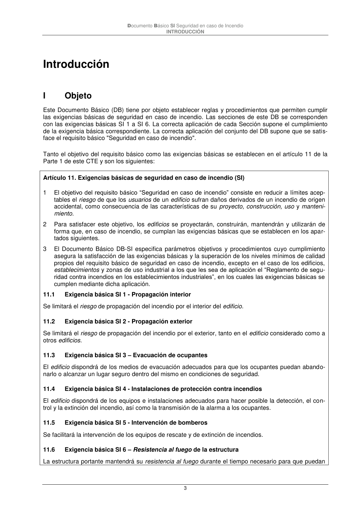
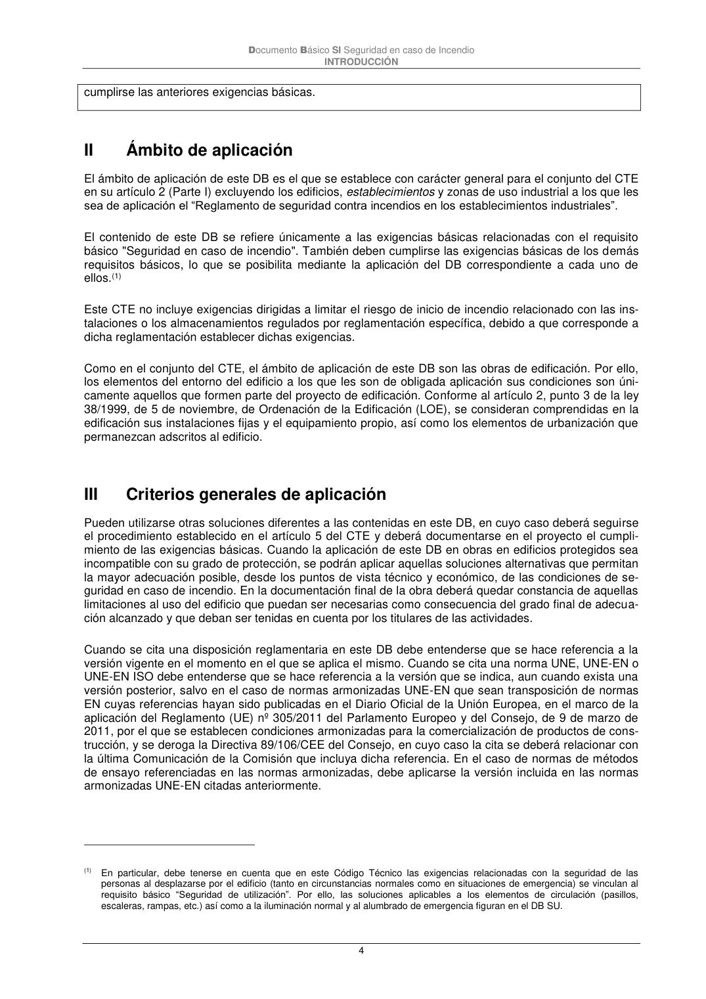

DB-SI Seguridad en caso de incendio · edición 2025-03-04 · capa oficial
Documento DB-SI-oficial · SHA-256 del PDF 0a2e78cd62471d9cc5cfe2efbc6aa39fdbad73c124aea7b039f9de96c141e105
Copia fiel del PDF fuente · Fuente oficial
Ficha de la disposición en la fuente oficial
Formatos: JSON del segmento · Markdown
Artículo 11. Exigencias básicas de seguridad en caso de incendio (SI) 1 El objetivo del requisito básico “Seguridad en caso de incendio” consiste en reducir a límites acep- tables el riesgo de que los usuarios de un edificio sufran daños derivados de un incendio de origen accidental, como consecuencia de las características de su proyecto, construcción, uso y manteni- miento. 2 Para satisfacer este objetivo, los edificios se proyectarán, construirán, mantendrán y utilizarán de forma que, en caso de incendio, se cumplan las exigencias básicas que se establecen en los apar- tados siguientes. 3 El Documento Básico DB-SI especifica parámetros objetivos y procedimientos cuyo cumplimiento asegura la satisfacción de las exigencias básicas y la superación de los niveles mínimos de calidad propios del requisito básico de seguridad en caso de incendio, excepto en el caso de los edificios, establecimientos y zonas de uso industrial a los que les sea de aplicación el “Reglamento de segu- ridad contra incendios en los establecimientos industriales”, en los cuales las exigencias básicas se cumplen mediante dicha aplicación. 11.1 Exigencia básica SI 1 - Propagación interior Se limitará el riesgo de propagación del incendio por el interior del edificio. 11.2 Exigencia básica SI 2 - Propagación exterior Se limitará el riesgo de propagación del incendio por el exterior, tanto en el edificio considerado como a otros edificios. 11.3 Exigencia básica SI 3 – Evacuación de ocupantes El edificio dispondrá de los medios de evacuación adecuados para que los ocupantes puedan abando- narlo o alcanzar un lugar seguro dentro del mismo en condiciones de seguridad. 11.4 Exigencia básica SI 4 - Instalaciones de protección contra incendios El edificio dispondrá de los equipos e instalaciones adecuados para hacer posible la detección, el con- trol y la extinción del incendio, así como la transmisión de la alarma a los ocupantes. 11.5 Exigencia básica SI 5 - Intervención de bomberos Se facilitará la intervención de los equipos de rescate y de extinción de incendios. 11.6 Exigencia básica SI 6 – Resistencia al fuego de la estructura La estructura portante mantendrá su resistencia al fuego durante el tiempo necesario para que puedan Documento Básico SI Seguridad en caso de Incendio INTRODUCCIÓN 4 cumplirse las anteriores exigencias básicas.

